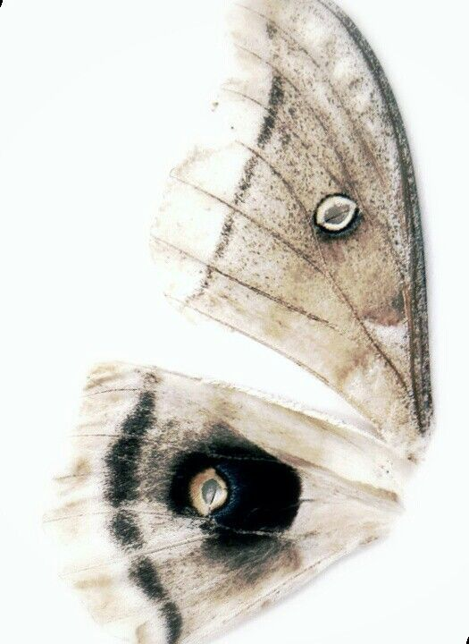

𝐌𝐞𝐭𝐚𝐦𝐨𝐫𝐩𝐡𝐨𝐬𝐢𝐬 𝐨𝐟 𝐭𝐡𝐞 𝐎𝐥𝐝𝐞𝐬𝐭 𝐂𝐡𝐢𝐥𝐝

English Translation:
The family system holds a fascinating aspect where there are specific dynamics to
raising children. The oldest child, who holds the most senior position within this
system, experiences what can be termed as the "Metamorphosis of the Oldest Child."
It is the first complete phase of the oldest child's life, involving not only self-
discovery but also the responsibilities of nurturing their younger siblings and
facing various facets of their own life.
The first stage of the oldest child's transformation occurs when they become fully
prepared to fulfill their parents' expectations. They venture towards higher education
and make decisions for their future. This phase often marks the solidification of their
identity as they seek their paths of progress and acknowledge their significance.
In the second stage, the role of the oldest child becomes crucial in domestic life.
They journey from a household environment to engaging in cultural, commercial, and
educational pursuits. They provide guidance to their younger siblings, spend time with them,
and aid in their education. Through their assistance,
the younger ones benefit from their guidance and experiences.
In the final stage, the metamorphosis of the oldest child culminates in them becoming informed
and experienced parents themselves. They understand the purpose and meaning of their life, striving
to create a better future for their upcoming generation. Their exemplary success reflects in the upbringing
of their own children, imparting lessons of professional well-being in their lives.
The transformation of the oldest child serves as an exemplar path that showcases glimpses of human evolution.
Through this intricate process, they recognize their identity, fulfill their societal and familial obligations,
and strive for a serene and prosperous life.
Urdu Translation:
عائلی نظام کا ایک دلچسپ جانب ہوتا ہے جس میں بچوں کی تربیت کرنے کی مخصوصیات ہوتی ہیں۔
سب سے زیادہ عمر رکھنے والا بچہ اس نظام کا حصہ ہوتا ہے جس کو "بڑے بچے کی تبدیلی" کہا جاتا ہے۔
بڑے بچے کی زندگی کی پہلی مکمل تجربہ ہوتی ہے،
جس میں ان کی ذاتیت کو شناختنے کے علاوہ انہیں اپنے چھوٹے بچوں کی تربیت اور
اپنی زندگی کے مختلف پہلوؤں کا سامنا کرنا بھی پڑتا ہے۔
بڑے بچے کی تبدیلی کا پہلا مرحلہ وہ ہوتا ہے جب وہ اپنے والدین کی انتظاروں کو پورا کرنے کے
لئے مکمل طور پر تیار ہوتا ہے۔ ان کی پہلی تعلیم کی طرف بڑھنے کا وقت آتا ہے اور وہ اپنے
مستقبل کے لئے راہتازی کرنے کا فیصلہ کرتے ہیں۔ یہ مرحلہ عموماً ان کی ذاتیت کی پخت ہونے کی
ایک دلیل ہوتی ہے، جب وہ اپنی ترقی کی راہوں کو تلاش کرتے ہیں اور اپنے اہمیت کو جانتے ہیں۔
دوسری مرحلہ میں، بڑے بچے کا کردار گھریلو زندگی میں اہمیت بڑھاتا ہے۔
ان کو غربت کے ماحول سے لے کر فرہنگی تجارتی اور تعلیمی امور تک کا سفر کرنا پڑتا ہے۔
وہ اپنے چھوٹے بھائیوں یا بہنوں کے مشورے دینے، ان کے ساتھ وقت گزارنے،
اور ان کی تعلیم میں مدد کرنے کا رول ادا کرتے ہیں۔
ان کی مدد سے چھوٹے بچے ان کی رہنمائی اور تجربات سے فائدہ اٹھاتے ہیں۔
آخری مرحلہ میں، بڑے بچے کی تبدیلی کا مقام بنتا ہے جب وہ خود ایک آگاہ اور تجربہ کار
والدین بن جاتے ہیں۔ وہ اپنے زندگی کے مقاصد اور معنوں کو سمجھتے ہیں اور اپنی آنے والی نسل ک
یلئے ایک بہتر مستقبل ترتیب دینے کی کوشش کرتے ہیں۔ ان کی مثال آمیز کامیابی ان کے چھوٹے
بچوں کی تربیت میں نظر آتی ہے اور وہ اپنی زندگی کی پیشہ ورانہ سلامتی کے لئے کامیابی سے تربیت دیتے ہیں۔
بڑے بچے کی تبدیلی ایک مثالی راہ ہے جو انسانی ترقی کی عمومی جھلک دیتی ہے۔
اس پریکشیت پروسیس کے ذریعے وہ اپنی ذاتیت کو شناختتے ہیں، اپنے معاشرتی اور خاندانی فرائض
کا ادا کرتے ہیں، اور ایک سکون اور کامیاب زندگی کی کوشش کرتے ہیں۔